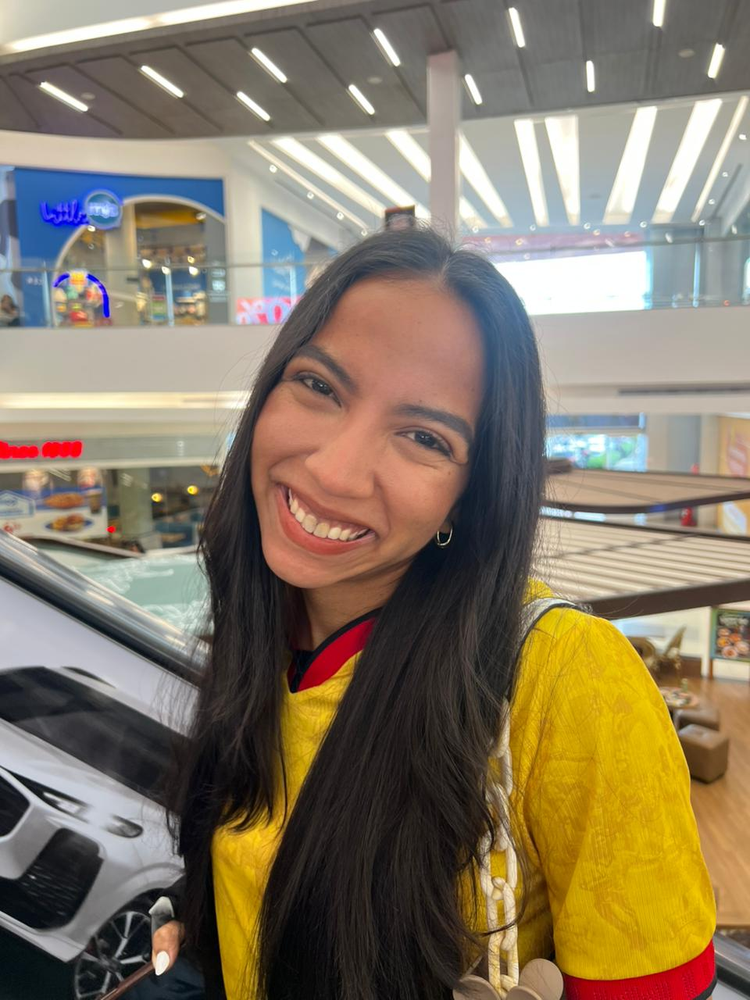

Para Feeeeer
212 días
21 de septiembre · flores amarillas
Hay cosas
Hay cosas
que comienzan
pequeñas.
Y algunas terminan convirtiéndose en algo muy bonito.
Todo empieza con una semilla
Ten paciencia...

la sonrisa que siempre quiero volver a ver
Lo que me llevo de nosotros
No son solo
No son solo
los días.
01Las conversaciones que terminan haciéndonos entendernos mejor.
02Las pequeñas cosas que, sin darnos cuenta, se convierten en recuerdos.
03Los momentos difíciles que aprendimos a atravesar juntos.
04Y todas esas veces en las que simplemente me alegra que seas tú.
🌻
Feliz Día de las Flores Amarillas
Y si pudiera
elegir de nuevo...
✨ Te volvería a elegir a ti. ✨
Te burda amo muchísimo, Fer.
212 días contigo